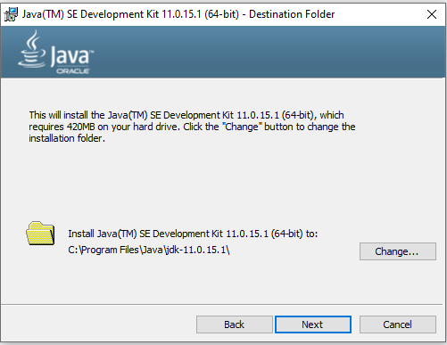
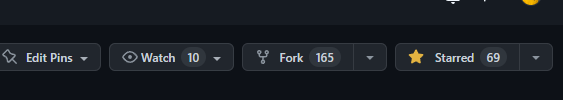
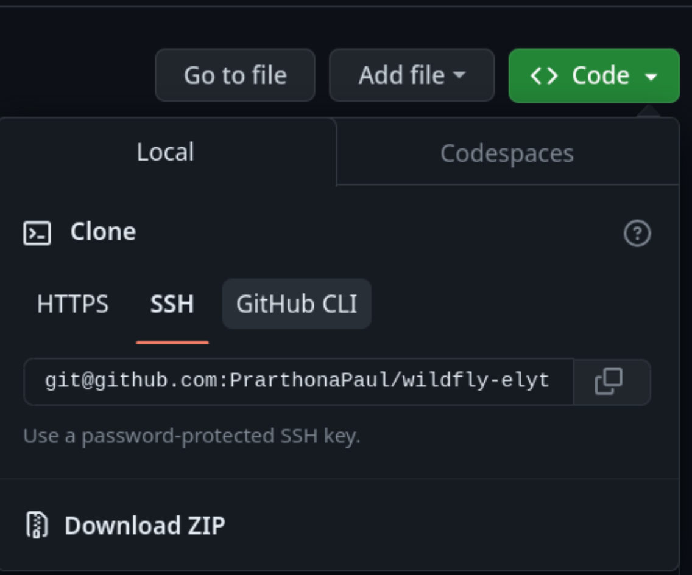

Setting up WildFly Elytron on Windows
This page will guide you through the steps needed to setup a development environment for WildFly Elytron on Windows.
Installing Java
-
First, let’s check if you already have Java installed.
-
Open Command Prompt and run
java --version. -
If the output shows a version number, check to make sure it is Java 11 (e.g., "11.0.15.1"). If so, Java 11 is already installed and you can jump to the Installing Maven section. If the output is not Java 11, or if the output is
'java' is not recognized as an internal or external command, operable program or batch file, continue with the following steps.-
If you encounter a message such as
Java was not found, run without arguments to install from the Microsoft Store, follow these instructions to disable the alias.
-
-
Close the Command Prompt.
-
-
Go to this page (or use your browser to search for "Download JDK 11") and download the "x64 Installer".
-
Run the file that you downloaded (installer shown below) and note where it is being installed.
-
Now open Command Prompt and run
java --versiononce again. This time, the output should be something like (the exact version will depend on the version that was installed):java version "11.0.15.1" 2022-04-22 LTS Java(TM) SE Runtime Environment 18.9 (build 11.0.15.1+2-LTS-10) Java HotSpot(TM) 64-Bit Server VM 18.9 (build 11.0.15.1+2-LTS-10, mixed mode) -
If you don’t see the output above, that means you’ll need to update your "Path" (optionally, use a temporary configuration):
-
Search for "Edit the system environment variables" in your Start menu.
-
Click on "Environment Variables".
-
Now double click the "Path" entry under "User variables for
<Windows username>". Then click "New" and enter the directory from the installer with "\bin" at the end. In this example, we’d need to add C:\Program Files\Java\jdk-11.0.15.1\bin to the "Path".


-
Click Ok until all of the windows are closed.
-
If you now close and re-open the Command Prompt, and run
java --version, you should now successfully see the Java 11 version that was installed.
-
-
Installing Maven
-
First, let’s check if you already have Maven installed.
-
Open Command Prompt, and run
mvn -v. -
If the output shows a version number, Maven is already installed and you can jump to the Installing Git section. If you get
'mvn' is not recognized as an internal or external command, operable program or batch file, then continue with the following steps. -
Close the Command Prompt.
-
-
Go to this page and download the latest Binary zip archive (e.g.,
apache-maven-3.8.6-bin.zip). -
Extract the zip and make a note of where it was extracted (e.g., C:\maven-3.8.6).
-
Add Maven to the "Path" (or use a temporary configuration):
-
Search for "Edit the system environment variables" in your Start menu.
-
Click on "Environment Variables".
-
Now double click the "Path" entry under "User variables for
<Windows username>". Then click "New" and enter the directory from the installer with "\bin" at the end. In this example, we’d need to add C:\maven-3.8.6\bin to the "Path".
-
Press Ok until all of the windows are closed.
-
-
If you now close and re-open the Command Prompt, and run
mvn -v, you should now see the Maven version as shown here:
Apache Maven 3.8.6 (84538c9988a25aec085021c365c560670ad80f63)
Maven home: C:\apache-maven-3.8.6
Java version: 11.0.15.1, vendor: Oracle Corporation, runtime: C:\Program Files\Java\jdk-11.0.15.1
Default locale: en_CA, platform encoding: Cp1252
OS name: "windows 10", version: "10.0", arch: "amd64", family: "windows"Installing Git
-
First, let’s check if you already have Git installed.
-
Open Command Prompt and run
git --version. -
If the output shows a version number, Git is already installed and you can jump to the Cloning WildFly Elytron section. If you get
'git' is not recognized as an internal or external command, operable program or batch file, then continue with the following steps.-
If you encounter a message such as
Git was not found, run without arguments to install from the Microsoft Store, follow these instructions to disable the alias.
-
-
You can now close Command Prompt.
-
-
Go to this page and download the latest Windows version.
-
Run the installer and don’t change any of the default options while configuring.
-
Once the installation is complete, you should be able to open a Command Prompt and once again run
git --version. This time, the output will be something likegit version 2.37.1.windows.1. -
If you already had any IDEs open before, close and reopen them now to load your changes.
Cloning WildFly Elytron
-
First, configure Git so that it can attribute your commits to you. Run the following commands in the terminal, substituting your own name and email:
git config --global user.email "<you@example.com>" git config --global user.name "<Your Name>" -
Next, you’ll need a GitHub account. If you don’t already have one, sign up for one at github.com. Otherwise, make sure you’re logged in.
-
Fork the WildFly Elytron project into your GitHub account by clicking on the "Fork" button at the top right.
 -
Now go to your fork of the repository, the URL will be https://github.com/<USERNAME>/wildfly-elytron. Replace
<USERNAME>with your GitHub username. -
At the top right, you’ll see there is a green "Code" button. Click on that, and for the easiest setup choose the "HTTPS" tab. Click on the button next to the URL to copy it.
 -
Open your terminal and navigate to the directory where you want to clone this project. Then enter
git clone [URL]and replace[URL]with the URL you copied in step 4. Now you should see a directory calledwildfly-elytronthat contains the code for the WildFly Elytron project. -
Next, add a remote reference to upstream, for pulling future updates from the source repository. Execute the following command in the terminal:
cd wildfly-elytron git remote add upstream https://github.com/wildfly-security/wildfly-elytron.git
Building WildFly Elytron
-
Open a Command Prompt.
-
Navigate to the
wildfly-elytronproject directory and runmvn clean install. This will build the project. -
Check out the Getting Started for Developers guide to learn more about the WildFly Elytron project and how to run tests.
Restoring Configuration
If you need to restore your original system configuration at some point, you can follow the steps here.